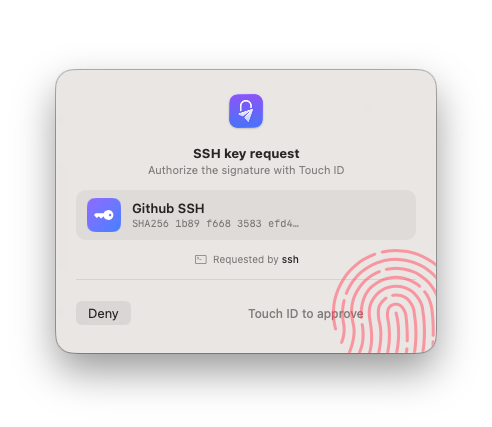
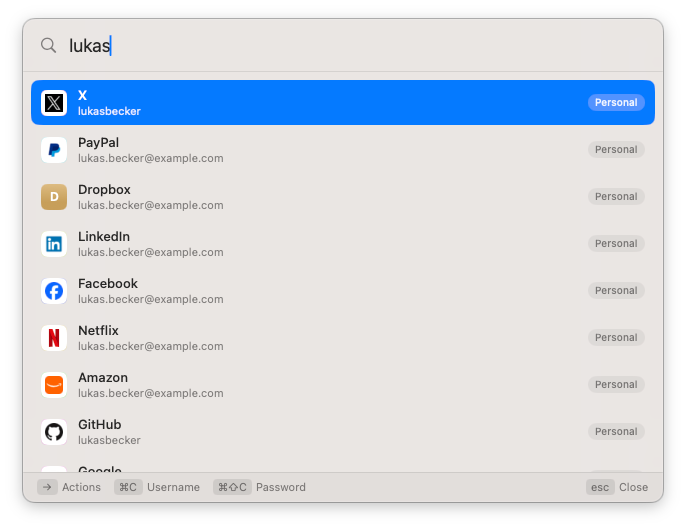
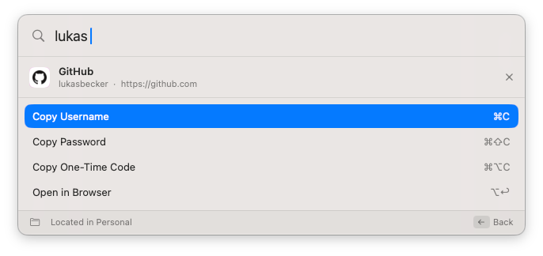
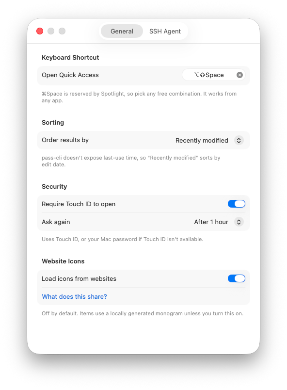

A native quick-access window for Proton Pass. Summon it over any app, search, and copy a username, password or one-time code, without ever opening the Electron app.
Everything happens from the keyboard, over whatever you're working in. No window switching, no waiting for an Electron app to wake up.
The same substring, diacritic-insensitive, multi-word matching as the official client, across titles, usernames, emails, URLs, notes and custom fields. Ordered by most recently modified or alphabetically.
Username, password, or one-time code, each shown only when the item actually has that field.
Jump straight to the item's site, with a chooser when an item has several URLs.
Guard casual access with Touch ID and a configurable timeout, falling back to your Mac password.
When your Proton session expires, the panel signs you back in through Proton's web login instead of dead-ending, then reloads itself and the SSH agent. Save an access token to reconnect without the browser, reusing your next Touch ID.
Reopen within 30 seconds and land back on the same item, to grab another field.
Items show a locally generated monogram. Opt in to favicons with a clear notice, never fetched for local or private addresses.
The app never reimplements Proton's crypto or auth. It drives the official, Proton-maintained pass-cli and is careful never to be the weaker link.
The in-memory index holds only titles, URLs, usernames and whether a password or code exists, never the values.
Passwords and codes are read from pass-cli at the moment you copy, marked concealed on the pasteboard, and cleared after 30 seconds.
The app holds no Proton credentials and relies entirely on the CLI's existing session.
Signed release builds use the hardened runtime without get-task-allow, so other processes can't attach. Nothing is written to disk.
It checks one static file (the appcast on GitHub Pages) at launch and every two hours, with no account data, just a fetch you'll see on the network. New versions never install on their own: you click Update, and each download is checked against a pinned EdDSA key first.
Just like 1Password's SSH agent: it serves the SSH keys you keep in Proton Pass to git and ssh, and asks for Touch ID before every signature, naming the app that's asking. The private keys never leave pass-cli; the app only adds the native confirmation.

Tip: the config entry covers ssh and git. For tools that read the SSH_AUTH_SOCK environment variable instead of ~/.ssh/config (like ssh-add or some GUI clients), also turn on Set SSH_AUTH_SOCK for new programs, it publishes the proxy to your login session for programs launched afterwards.
Same workflow. Move your SSH keys into Proton Pass and let the app write the ~/.ssh/config entry for you (step 2). Then just remove 1Password's own IdentityAgent line and turn off its agent. One gotcha shared by every agent: an explicit on-disk IdentityFile for a host wins over the agent, so drop those lines for the hosts you want served from Proton Pass.
hotkey ▸ search ▸ pick ▸ copy / open. Opens over any app and dismisses when it loses focus.
vault list, item list, item view. Secrets are fetched just-in-time and never cached.
The Proton-maintained client handles all authentication and cryptography.



Grab the latest pre-built app, or build it from source. Either way you'll need macOS 14+ and pass-cli installed and logged in.
Download for macOSThe download isn't notarized yet (a notarized release needs an Apple Developer ID certificate). The first time, right-click the app and choose Open to get past Gatekeeper, or run xattr -dr com.apple.quarantine PassQuickAccess.app. Sponsoring helps cover notarization. You can also sign up for Proton with my referral link: you get 2 weeks of a paid plan, and I get a small reward if you subscribe.
# Build from source # needs xcodegen too git clone https://github.com/bsramin/pass-quick-access cd pass-quick-access xcodegen generate xcodebuild -scheme PassQuickAccess \ -destination 'platform=macOS' \ -derivedDataPath build build open build/Build/Products/Debug/PassQuickAccess.app